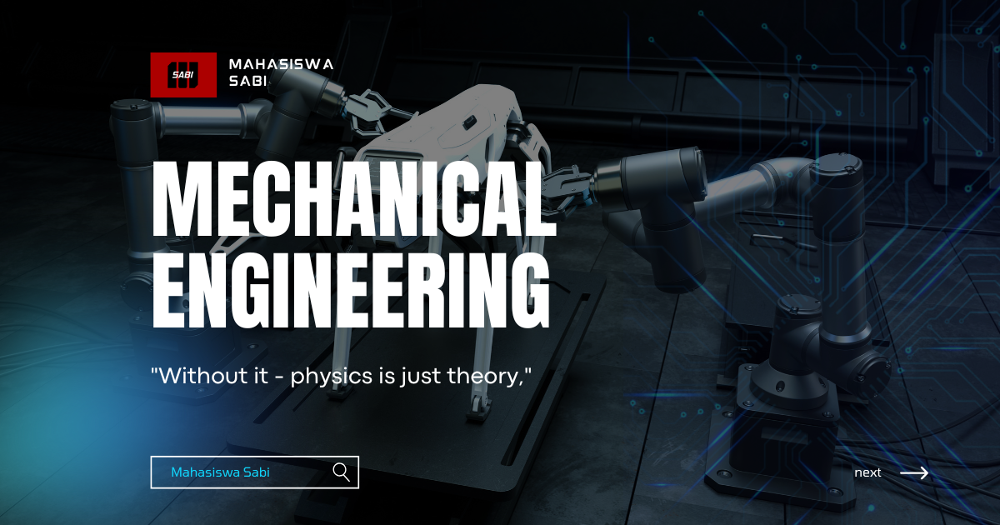

Mekanika Getaran
Mengendalikan Osilasi Mesin: Mekanika Getaran sebagai Kunci Stabilitas Teknik Mesin
Getaran adalah fenomena yang tak terpisahkan dari mesin yang bergerak. Dari getaran halus pada motor listrik hingga osilasi besar pada struktur dan poros berputar, getaran dapat menjadi indikator kesehatan mesin sekaligus sumber kerusakan jika tidak dikendalikan. Dalam major studi Teknik Mesin, keilmuan Mekanika Getaran menjadi dasar penting untuk memahami, menganalisis, dan mengendalikan fenomena osilasi dalam sistem mekanik.
Mekanika Getaran membekali mahasiswa dengan kemampuan menganalisis respon dinamis mesin agar tetap stabil, aman, dan andal.
Apa Itu Mekanika Getaran?
Mekanika Getaran adalah cabang dinamika yang mempelajari gerak osilasi suatu sistem mekanik di sekitar posisi keseimbangan. Keilmuan ini menjelaskan bagaimana sistem merespons gangguan, baik yang berasal dari dalam maupun luar sistem.
Dalam Teknik Mesin, mekanika getaran menjadi dasar analisis kenyamanan, keandalan, dan umur pakai mesin.
Ruang Lingkup Mekanika Getaran
Keilmuan Mekanika Getaran dalam Teknik Mesin mencakup berbagai konsep penting, antara lain:
- Sistem satu derajat kebebasan.
- Getaran bebas dan getaran paksa.
- Redaman dan respon transien.
- Resonansi dan frekuensi alami.
- Getaran sistem multi derajat kebebasan.
- Dasar analisis getaran mesin.
Ruang lingkup ini memberikan pemahaman komprehensif tentang perilaku osilasi sistem mekanik.
Peran Mekanika Getaran dalam Major Studi Teknik Mesin
Dalam major studi Teknik Mesin, Mekanika Getaran memiliki peran strategis, di antaranya:
- Menjadi dasar analisis kestabilan sistem mekanik.
- Mencegah kegagalan akibat resonansi.
- Mendukung perancangan mesin yang halus dan nyaman.
- Meningkatkan umur pakai dan keandalan mesin.
- Menjadi fondasi bagi akustik dan dinamika lanjut.
Keilmuan ini membantu mahasiswa memahami bahwa getaran harus dikelola, bukan dihindari.
Pendekatan Getaran dalam Rekayasa Mesin
Mekanika Getaran mengajarkan pendekatan analitis dalam memahami respon dinamis sistem, meliputi:
- Pemodelan sistem massa-pegas-redaman.
- Analisis respon terhadap gaya periodik.
- Identifikasi frekuensi alami sistem.
- Evaluasi pengaruh redaman.
- Simulasi getaran menggunakan metode matematis.
Pendekatan ini membekali mahasiswa dengan kemampuan mengendalikan getaran secara ilmiah.
Aplikasi Mekanika Getaran dalam Teknik Mesin
Keilmuan Mekanika Getaran diaplikasikan secara luas dalam dunia Teknik Mesin, antara lain:
- Analisis getaran mesin berputar.
- Perancangan sistem peredam getaran.
- Industri otomotif dan transportasi.
- Diagnosis kondisi dan pemeliharaan mesin.
- Rekayasa mesin yang stabil dan senyap.
Aplikasi ini menunjukkan bahwa pengendalian getaran adalah kunci kualitas dan keselamatan mesin.
Penutup: Menjaga Harmoni Gerak Mesin
Mekanika Getaran merupakan fondasi penting dalam pendidikan Teknik Mesin karena menjelaskan fenomena osilasi yang sangat memengaruhi kinerja dan keandalan sistem mekanik. Keilmuan ini menghubungkan teori dinamika dengan kondisi nyata mesin yang beroperasi.
Dengan penguasaan Mekanika Getaran, mahasiswa Teknik Mesin dipersiapkan menjadi insinyur yang mampu menganalisis, mengendalikan, dan mengoptimalkan respon getaran mesin demi keselamatan, kenyamanan, dan keberlanjutan teknologi masa depan.
Mahasiswa Sabi
©Repository Muhammad Surya Putra Fadillah